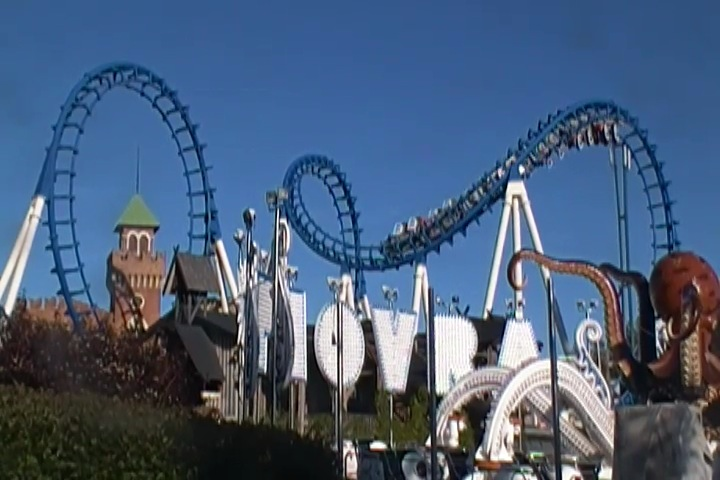

| |
Power Park Review

Power Park is a small, but lively amusement park. It's far from the best amusement park and not too many enthusiasts know about the park since the park is in a remote part of Finland, and not near any major cities. Seriously, this park is just 400 kilometers away from the Arctic Circle. Yeah, 400 kms is still far, but compared to almost every other amusement park in the world, it's really freaking close. I mean, this park is so north, the sun never sets here. So you'd expect a park this far north to be really isolated. And yeah, it sort of is. There's a couple cities nearby, but Power Park is in a fairly rural place. The entire resort honestly kind of feels like its own little town. Yeah, the amusement park itself isn't all that big, but it has other stuff as well. It has a hotel, and some cabins. And plenty more that we'll discuss in great detail later on in this review. I know that a park like this isn't something that wouldn't come across most enthusiasts radars. And for a while, that was the case. It was only really known to locals, Go Karting fans, and credit whores as the amusement park itself was nothing special. But the park started getting attention when they first added their first major roller coaster, Thunderbird, getting enthusiasts to notice the park more. This got more people to notice the park, and it's grown even more, adding a Gerslauter launched coaster, Junker, since my last visit to the park. And on top of good coasters, they have some really good flat rides, other fun attractions, a nice atmosphere, and much more intersting stuff. We go over all these details much more in the rest of the review. But yeah. Power Park is really freaking good.
Rollercoasters
There is a link to a review of all the Rollercoasters at Power Park.
(Please keep in mind that there is no review of Junker or Pitts Special since neither of them existed when I last visited.)
Top Coasters
Thunderbird Review

Decent Coasters
Cobra Review

Family Coasters
Joyride Review

Neo's Twister Review
Kiddy Coasters
Mine Train Review

Flat Rides
Here are the reviews of all the Flat Rides at Power Park. The flat ride collection here is...intersting. It has a lot of cool flat rides, but the ones you'd have the highest expectations for are the ones that will dissapoint you. Meanwhile, the ones that you wouldn't really think that much of, are the ones that'll blow you away. Case in point, let's talk about Pegasus. Now I'm pretty sure that almost none of you are familiar with this ride. Pegasus isn't a typical flat ride, and it's not one that stands out. Yeah, it looks fun, but nothing special. Well, because nobody talks about it, I went in not expecting much. HOLY SH*T!!! THIS RIDE IS FREAKING INSANE!!! I'm not sure what type of ride Pegasus is. I'm doing research on that for this review, and...I'm lost. The most I hear people say is that it's like a Top Scan. And...yeah. It kind of is. But here's the thing. It's much better!!! Seriously, this thing just goes bonkers, full balls out. Yes, it's even crazier than Samauri @ Lagoon. I felt like a rag doll on this thing. It's very likely to land a spot on our Top 10 Flat Ride List. OK. That was the best flat ride. Let's move onto their next best flat ride. Dragon Tower. Yeah, their Drop Tower isn't even their best flat ride. However, this isn't just because Pegasus is that good (though that certainly plays a part in it). But rather, the sheer fact that it's a Mach Tower. I know these things get a lot of criticism for breaking down. And (at least here), they operate just fine. And the drop itself is pretty good. It's fine as a drop tower. What's really problematic about this drop tower is just the sheer fact that the seats are so damn uncomfortable. I know I ranted about this when I made the update, so you can specifically read that rant to really know why those seats are terrible, but for now, just LOOK AT THEM!!! DOES THAT LOOK LIKE SOMETHING NORMAL PEOPLE CAN FIT IN!!? Yeah, I know some of you will say that Finnish people aren't all obese like Americans. And yeah, that's true. We're fat motherf*ckers (though honestly, that's the least of our problems right now). But if even I, a skinnyass twig, feel uncomfortable, it's your seats. But even so, it's still a fun drop tower. The flat rides at Power Park continue. Let's move on and discuss their frisbee, Typhoon. Which, let's be honest. Coolest frisbee ever. Not because of it's program (though it does run a good program). But just look at it. It's a frisbee, that goes through a house. Yes, this is a half indoor, half outdoor frisbee. That is just badass. You get so many cool headchoppers on this ride. And not to mention, the visuals are just amazing. OK. Let's move on and talk about a flat ride that actually dissapointed me. Booster. Now you may be wondering how? It's a booster! These things are amazing! They make my Top 10 Flat Ride list. Yeah, they do. When they run a good program. While Booster here has the luxury of not being an upcharge here and just being a typical flat ride that the park has. That's the good news. The bad news is that it's very slow and honestly, not that good. Yeah, it's still fun. But when you compare it to Speed from the American Fairs, it's just dissapointing. So I was really bummed by that. They also have a Starflyer. However, it's not really a starflyer. It's more like elevated chairswings. Because if you thought the Starflyer at Six Flags Discovory Kingdom was small, you haven't seen the one here at Power Park. Then there's their bumper cars. Yeah, I know it's no big deal. But when you compare it to the dumb version we have here, take joy in the fact that there are no dumb rules here. And while their ferris wheel is small, it does provide some decent views, including that of rides such as Thunderbird, as well as of other Power Park attractions (particuarlly of Joyride). They also have a music express, some chairswings, an octopus, and a carousel. So yeah. You can see just how many cool flat rides that Power Park has.
 Don't underestimate this ride. It's f*cking nuts! =)
Don't underestimate this ride. It's f*cking nuts! =)
Fun ride. Just needs new seats.
 Coolest frisbee ever.
Coolest frisbee ever.
Dark Rides
Power Park has one main dark ride. And that would be their shooting dark ride. Devil's Mine Hotel. It's nothing really special. It's mostly just a shooting dark ride. It's fun enough. You're shooting at these devils and demons in a hotel. It's fun. POW! POW! Shoot them all. Kill them all. Though I do have to warn you. Watch your back on this ride. The seats have bumps in them. Or at least they did when I rode it. I know why they do this. To simulate some sort of evil spirit crawling down your back. And while I do kind of like it (I do love those massage chairs), it just didn't feel right on this ride. It kind of annoyed me. But hey. It's still a fun ride.
This doubles both as a shooting dark ride and a massage chair. =)
Water Rides
I didn't ride either of the water rides at Power Park. Though, honestly, considering just how north Power Park is, I'm surprised they have any water rides here. It gets chilly here. We're literally only a couple hundred kilometers from the Arctic Circle. The sun never sets here. They do have a log flume. I honestly, never saw it at all. It must be in a corner of the park that I just never checked out. But from looking at the photos of the log flume, it doesn't look like anything special. The other water ride they have is a water whip. OK, now I wish I rode this. These rides are awesome, and they don't get you that wet. It would've been great. But apparently, it's in the same place as that stupid log flume. Oh well. Something for next time.
Dining
The dining at Power Park is actually really good. OK, maybe not all of it. They do have a lot of standard amusment park crap. But what I really want to take about is the Steakhouse Canyon. Now I know this may not seem like the best thing. But actually, it's a really good steakhouse. The whole thing has a Western interior, and just a really good atmosphere. And then there was the steak, which was really good. I loved it, the garlic butter it came with, as well as this really good baked potato. Throw in some European Fanta, and I love this meal. Then there's the hotel resteraunt. It seemed good. Good rule of thumb. The warm meat was really good, while the cold meat wasn't so good. But all in all, it was really good. Apparently, they also have this really good Thai resteraunt at Power Park. Hey, considering just how good their steakhouse was, I trust them to serve good Thai food.
 The garlic butter makes it even better.
The garlic butter makes it even better.
Theming and Other Attractions
Here are the reviews of all the other stuff at Power Park. OK. As far as theming goes, there's almost none. Yeah, there's a little bit of western theming in some areas around the park. But let's keep it real. It's carnival level theming. It adds a nice little touch, but yeah. You know not to expect too much theming from a place like Power Park. As far as other stuff to do, oh boy. Do we have have what may very well be one of the most unique attractions that a theme park has to offer (Hmm. That should be a Top 10 List). Go Karting. Now some of you may be rolling your eyes and be thinking "Really? Go-Karting? They have that as an upcharge at all sorts of parks and even crappy Family Entertainment Centers and credit whoring stops. That's not special you dumbass!". But this isn't just any old ordinary go-karts. No, I'm not talking about really cool and esquisate go kart tracks like they have at Mt. Olympus (If only the operations weren't so damn terrible). No, I'm talking about real go-karting. The go karting where you race on an actual track, and have legit kart-racing. These go-karts go up to 60 mph, and you're officially racing. It's basically real life Mario Kart. Only you don't have to worry about any banana peels or red shells. And in all honesty, it's freaking awesome! I know it's technically not inside the park and part of the whole Power Park Resort. But if you haven't done it before, you really should. It's just a ton of fun. Yeah. I know. I suck at it, and you probably do too. But even if you lose, it's just a ton of fun. I know it's expensive, but seriously. At what other theme park will you be able to go kart-racing!? Don't be afraid of the spin outs. They're not that bad. Honestly, what else is there to talk about outside of kart-racing? That...that tops everything. Everything else is just standard. I know I never did any of the other random stuff. Apparently, they have typical theme park go-karts as well. Why would you do that when they have kart-racing on the Mika Sako Circuit!? Just do that. I know some might be scared, but trust me. It's not that bad. Apparently while checking their website, they actually have other cool stuff, including some 5D Movies, paintballing, and even an ATV Safari. Damn! I never knew Power Park had all this stuff. There's even more to this place than I thought before writing this review! =)
Unless your go-karts are used for actual kart-racing, like at Power Park, I'm not interested.
In Conclusion
Power Park is a park that despite its remote location, it actually has quite a bit of cool stuff. They have all sorts of fun stuff, such as a cool and twisty GCI wooden coaster, as well as a real and legit go karts where you can go kart-racing and reach speeds of 60 mph on an actual go-kart track. But on top of that, it's got a lot of other fun rides, such as some really crazy flat rides, including this one weird Top Scan-like ride, as well as a frisbee that's partially indoors, what's without a doubt, the coolest Boomerang ever, a spinner that surprisingly is a lot of fun, and a lot more. It's actually a really fun little park. And on top of all that, they've added a launched Gerslauter coaster since my last visit. So yeah. Power Park may be very well out of the way, not near any major cities, and a couple hundred kilometers away from the literal Arctic Circle, but they've actually got some cool stuff and it's worth a visit or two. Hoping to get back to a park like this soon enough.
Enthusiast FAQs.
*Are there kiddy coaster restrictions? - Nope. You can ride the kiddy coaster here.

Tips
*Ride Thunderbird (and I assume Junker) multiple times.
*Do the kart racing at the Mika Salo Circuit. Yeah, it costs money. But it's totally worth it.
*Be sure to check out some of the cool flat rides.
*Power Park is only POV friendly if you have a Go-Pro.
*Bring a jacket. It gets chilly considering how close it is to the Arctic Circle.
*Have Fun!!!!
Theme Park Category:
Amusement Park
Location
Kauhava, Southern Ostrobothnia, Finland
Last Day Visited
June 26, 2014
Video
I don't have enough video to make a real quality Power Park video. I'll have to go back and shoot more video. Plus, then it can include Junker.
Complete Update List
2014
TPR's Scandinavia Trip
Here's a link to the parks website.
Home
|
{kind=link}